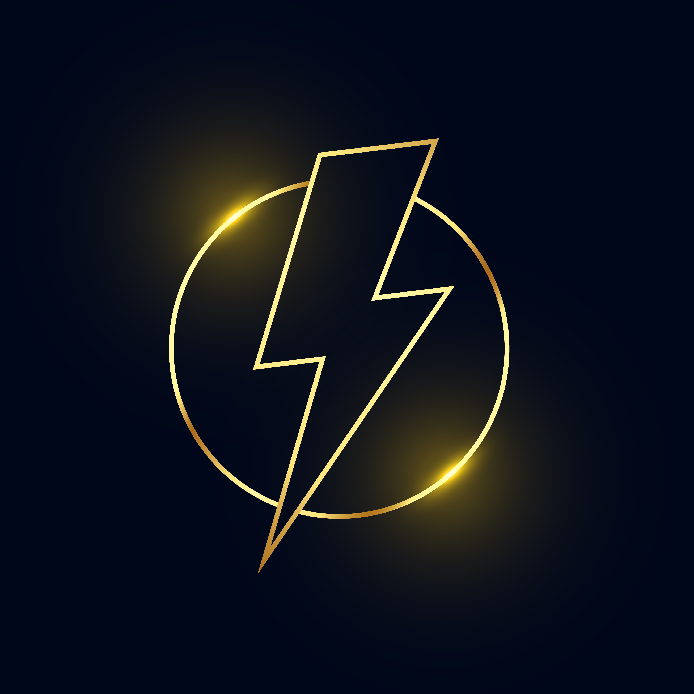

Halo! 👋
Perkenalkan, saya Anthony. Senang bisa menyapa kamu di sini 😁
Saya orang yang suka belajar hal baru dan terbiasa kerja di lapangan maupun di belakang layar. Buat saya, kerja itu bukan cuma soal beres... tapi juga soal rapi, aman, dan efisien.
Dengan pengalaman di beberapa bidang, saya siap bantu perusahaan biar operasionalnya jalan lancar tanpa drama.
Perawatan, perbaikan, dan pengecekan instalasi listrik. Biar mesin nyala, produksi aman, dan gak ada konslet-konslet club.
Pendataan, surat-menyurat, laporan, dan segala hal yang berbau rapih-rapih. Data rapi = kerja tenang.
Troubleshooting komputer, jaringan, software, dan bantu tim biar gak panik pas komputer ngadat. IT problem? Panggil aja.